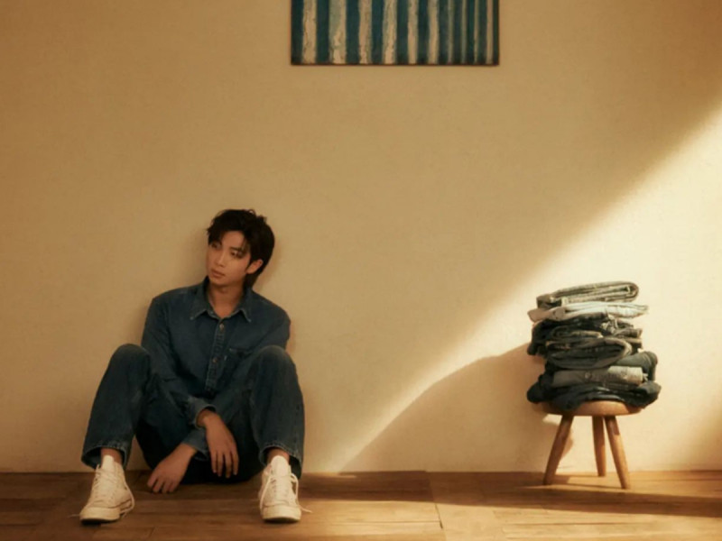
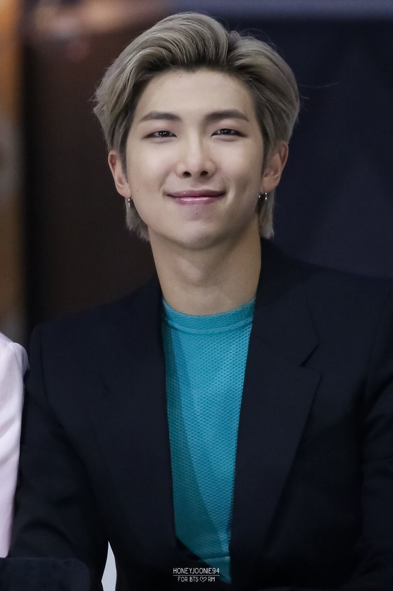

¿Quién es Kim NamJoon?
Kim Nam-joon, más conocido por su nombre artístico RM, es un rapero, compositor y productor surcoreano. Es el líder del grupo BTS. En 2015, lanzó su primer mixtape RM.

Kim Nam-joon, más conocido por su nombre artístico RM, es un rapero, compositor y productor surcoreano. Es el líder del grupo BTS. En 2015, lanzó su primer mixtape RM.
Kim Nam-joon nació el 12 de septiembre de 1994 en Dongjak-gu, Corea del Sur. Antes de su debut, era un rapero underground el cual usaba el nombre artístico "Runch Randa"; lanzó varias canciones y colaboró con el conocido rapero Zico.1 Era parte del grupo surcoreano de hip hop underground Daenamhyup, el cual consiste de Marvel J, l11ven, Supreme Boi, Iron, Kyum2, Kidoh, Samsoon, Illipse, DJ Snatch y él. El grupo tuvo actividad desde 2009 hasta 2013, cuando RM dejó su participación en el grupo para concentrarse en BTS, aunque en una llamada con Supreme Boi, dijo que algún día volvería a participar con Daenamhyup,2 aunque algunos miembros del grupo continuaron participando sin RM.34 RM tiene muchos logros académicos notables. Alcanzó un 850 en el TOEIC cuando estaba en secundaria, probablemente debido por haber estudiado en Nueva Zelanda. También estuvo en el top 1.3% de la nación en los exámenes de entrada a la universidad en lengua, matemática, idiomas extranjeros y ciencias sociales; además, tiene un CI de 148.5 Además de su lengua materna, habla fluidamente inglés y japonés, ya que continuó estudiando japonés luego del debut de BTS, ya que todos los miembros de Big Hit reciben clases básicas de dicho idioma. También vio múltiples veces el sitcom estadounidense Friends para ayudarle a aprender inglés.
2010-13: Big Hit y debut con BTS Artículo principal: BTS RM fue reclutado como el primer miembro de BTS en 2010, durante una audición de talento de Big Hit. RM ensayó por años con dos compañeros, el rapero underground, Min Yoon Gi (Suga) y el bailarín Jung Ho Seok (J-Hope).6 El 13 de junio de 2013, RM hizo su debut como líder de BTS en el M Countdown de Mnet, con la canción «No More Dream», de su álbum sencillo debut 2 Cool 4 Skool.78 Desde entonces, ha producido, escrito y compuesto varias canciones en todos los álbumes de la banda. 2014-16: Primeras colaboraciones, RM y Problematic Men El 31 de diciembre de 2014, BTS hizo una actuación de introducción en MBC Gayo Daejejeon, que contó con la canción «Spaz», de Krizz Kaliko. Krizz Kaliko y Rap Monster luego produjeron la canción «Rush», la cual fue publicada el 20 de marzo de 2015 en el SoundCloud oficial de BTS, como parte del mixtape en solitario RM.9 RM ha colaborado con varios artistas coreanos y americanos. El 4 de marzo de 2015, publicó un sencillo con Warren G, titulado «P.D.D (Please Don't Die)» junto a su videoclip, el cual mostraba el detrás de escenas de su colaboración en Los Ángeles.1011 Tiempo después, Warren G habló sobre RM en una entrevista con Hiphopplaya, en la cual dijo que "hablando como artista y productor, [Rap Monster] es un rapero excepcional. La forma en la que transmite su rap es increíble."12 Junto a EE y Dino-J, RM colaboró con el proyecto de hip hip MFBTY para la canción «Buckubucku (부끄부끄)», participando también en su videoclip,1314 y en un cameo de otro videoclip de MFBTY, para la canción «Bang Diggy Bang Bang (방뛰기방방)».155 En el episodio del 24 de marzo del 2015 del programa de Mnet 4 Things Show, Tiger JK de MFBTY presentó a RM como "el junior quien cambió mis preconcepciones sobre los ídolos", y después agregó que "Rap Monster es una persona agradable y un amigo compatible", RM también habló sobre Tiger JK, diciendo que "soy un fanático quien creció viendo a Tiger JK".16 El 10 de marzo de 2015, una imagen de RM fue publicada en el blog de BTS, junto a las palabras: "RM by Rap Monster. You do You, I do I" (lit. RM por Rap Monster. Tú haz lo tuyo, yo lo mío).17 Esta imagen ayudó a anunciar que RM lanzaría su primer mixtape en solitario, RM, el 20 de marzo.18 La primera canción del álbum, «Awakening (각성)» fue publicada junto a su videoclip el 12 de marzo.1920 Además, otras dos canciones de su mixtape, «Do You» y «Joke (농담)», también tienen videoclips publicados en YouTube, siendo estos publicados el 19 y el 26 de marzo respectivamente.2122El mixtape alcanzó el puesto 48 en la lista de los "50 Mejores álbumes de hip hip de 2015" de la revista Spin.23 El 9 de abril de 2015, el rapero surcoreano Primary publicó su segundo álbum de estudio, 2; en el cual, participa junto a RM y Kwon Jin Ah en la canción «U».245 También, el 5 de junio del mismo año, participa junto a Dok2, Juvie Train, Don Mills, Double K y TopBob en la canción «ProMeTheUs (튀겨)» del rapero Yankie, canción que forma parte del segundo álbum de estudio del artista, Andre.25 RM colaboró con Marvel para la canción del tráiler de la película Los 4 Fantásticos, el cual haría con la participación de la cantante estadounidense Mandy Ventrice. El sencillo digital, «Fantastic», fue publicado el 4 de agosto de 2015, a través de MelOn, Genie, Naver Music y otros servicios de música en línea.26 El videoclip del sencillo fue publicado en YouTube el 3 de agosto de 2015.27 El 20 de septiembre de 2015, RM partició en el All Force One (A.F.O) Hot & Cool Concert de 2015 en el AX-Korea, junto a los raperos Palo Alto, Verbal Jint, Supreme Boi, Sik-k e Incredivle.28 El 30 de agosto de 2015, se publicó el sencillo «Dilemma», del dúo surcoreano Homme, este sencillo fue coproducido por RM, junto a Bang Shi Hyuk.29 Esta fue su segunda producción oficial luego de la canción «Epilogue: Young Forever», del álbum recopilatorio de BTS, The Most Beautiful Moment in Life: Young Forever.30 y el lanzamiento no oficial en SoundCloud de «I Know».31 Esta también fue su segunda vez co-escribiendo y co-componiendo fuera de BTS después de las canciones de GLAM «Party (XXO)» en 2012 y «I Like That» en 2013. Por otro lado, la revista Spin declaró que RM «realmente tiene posibilidades de dejar su marca en los Estados Unidos»,32 mientras que Vice dijo que «tiene un My Beautiful Dark Twisted Fantasy dentro de él, pero se acerca más al espíritu de artistas más jóvenes como Earl Sweatshirt y Chance the Rapper».33 El 19 de marzo de 2017, se publicó en el YouTube oficial de Big Hit un videoclip para la canción «Change», una colaboración de RM con el famoso rapero estadounidense Wale.3435 El 8 de junio de 2017, RM y V escribieron y compusieron la canción «4 O'Clock (네시)», la cual fue publicada en el SoundCloud oficial de BTS.3637 El 4 de septiembre de 2017, Big Hit publicó el tráiler del comeback de BTS, con la canción «Serendipity» de su siguiente EP, Love Yourself: Her, interpretada por Jimin y con colaboraciones de RM en la letra.3839 El 19 de septiembre de 2017, RM anunció en su entrevista con Beats1 Noisey que cambiaría su nombre artístico a RM.40 Más tarde fue confirmado a través del fan cafe oficial de BTS.41 2017-presente: Mono y otras colaboraciones El 23 de octubre de 2018, RM publicó su segundo mixtape titulado Mono. En el mismo mes se convirtió en el primer solista coreano en posicionarse número uno de la lista de artistas emergentes en los Estados Unidos. Adicionalmente, Mono. debutó en el puesto número 26 de la lista Billboard 200 con 21 000 unidades convirtiéndose así en solista coreano mejor clasificado en el ranking.42 El 25 de marzo de 2019, la banda Honne anunció que RM contará con su participación en el tema «Crying Over You», el cual fue publicado el 27 de marzo.43 Honne originalmente publicó «Crying Over You» en 2018, únicamente contando con la colaboración de la cantante BEKA. La canción fue originalmente programada para ser lanzada en enero de 2019, pero se pospuso debido a «circunstancias imprevistas».44 La cantante Bibi Zhou fue añadida a la versión en chino, apareciendo junto con RM y reemplazando a BEKA.45 El mismo día de su lanzamiento, Big Hit publicó la canción «Persona» como un tráiler promocional para el próximo álbum de estudio de BTS Map of the Soul: Persona, interpretada por RM en solitario.46 El 23 de marzo de 2015, tvN publicó un avance para un próximo talk show de variedades, Problematic Men, el cual mostraba a RM como uno de los miembros del panel. Durante el show, RM junto a Jun Hyun Moo, Ha Seok Jin, Kim Ji Suk, Lee Jang Won y Tyler Rasch discuten con invitados sobre temas sociales.47 RM también es modelo de la marca de café K'hawah, junto a Iron y Jimin de AOA.48 En julio de 2016, se publicaron dos libros llamados HipHopHada, los cuales consisten de las historias de vida escritas por ellos mismos de 42 artistas de hip hop, incluyendo a RM.49 La revista estadounidense de hip hop XXL juntaron una lista de los diez raperos cuyas historias pensaron que sus lectores visitarían, entre los cuales también incluyeron a RM. El escritor Peter A. Berry compara a RM con "Pitbull o Flo Rida por esas vibras de pop," y promete que, "sería muy raro que Rap Monster falle a la altura de su nombre". Él describe a la joven estrella como "uno de los raperos más diestros de la región, capaz de cambiar la corriente sin esfuerzo a medida que se desliza a través de una colección de diversas instrumentales".5051
Namjoon es una persona muy madura y tímida. Su forma de ser y pensar demuestra la madurez de su persona. Esto se refleja en las letras profundas que compone o en su forma de expresarse. Es muy inteligente pero, al mismo tiempo, es alguien muy torpe, sobretodo con sus extremidades (brazos y piernas) con las cuales suele romper objetos sin hacerlo de manera intencional. Tiende a cuidar mucho de sus compañeros de grupo, no sólo por su posición de líder, sino por la preocupación que siente por ellos al ser tan cercanos unos con otros. Los integrantes de la banda lo ven como una persona fuerte, feroz y de claros pensamientos; le tienen mucho respeto. Inclusivo Jungkook, el maknae de BTS, eligió unirse a Big Hit Entertainment por que vio que su futuro líder tenia algo especial, todo esto pasó teniendo la oportunidad de unirse a otras 7 agencias.
Comenzó a escribir canciones en libros de texto cuando estaba en la escuela. En ese momento no sabia que hacer con su vida ya que no tenía ningún sueño o profesión en mente, por lo que decidió seguir el consejo de su padre y estudiar, a pesar de que no le gustara la idea. Por eso Asistió a la universidad de nombre 'Global Cyber University'. Años después encontro la oportunidad y comenzó a subir canciones a internet bajo el nombre Rm lo que logro generar interés a Bang PD